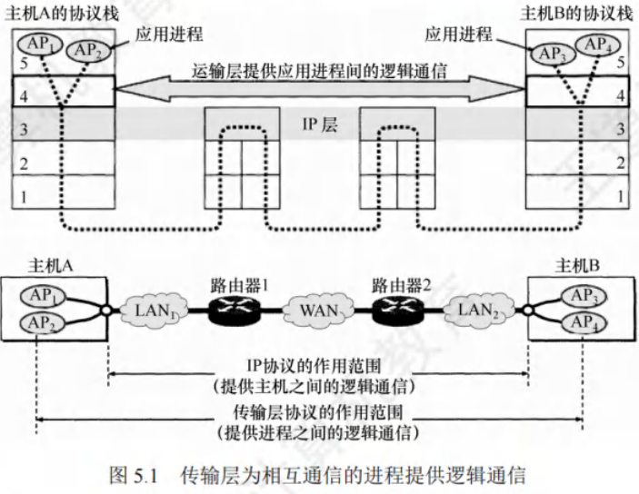
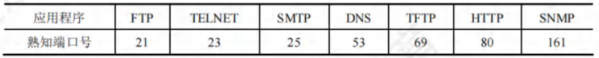
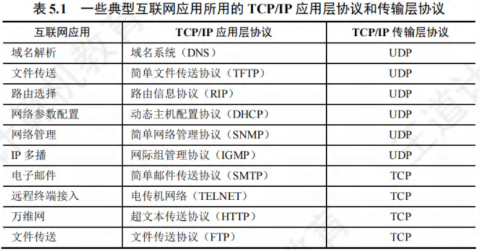

传输层提供的服务
[toc]
传输层的功能
数据链路层提供链路上相邻结点之间的逻辑通信，网络层提供主机之间的逻辑通信。
传输层位于网络层之上、应用层之下，为运行在不同主机上的进程之间提供逻辑通信，属于面向通信部分的最高层，也是用户功能中的最低层。即便网络层协议不可靠，传输层也能为应用程序提供可靠服务。
网络边缘部分的两台主机使用网络核心部分功能进行端到端通信时，只有主机的协议栈才有传输层，路由器转发分组时仅用到下三层功能（通信子网中无传输层，传输层只存在于通信子网以外的主机中)。

应用进程之间的逻辑通信
从网络层看，通信双方是两台主机，IP数据报首部给出主机IP地址。但“两台主机之间的通信”实质是两台主机中应用进程之间的通信，又称端到端的逻辑通信。IP协议能把分组送到目的主机网络层，但未交付给主机中的进程。
从传输层看，通信真正端点是主机中的进程，而非主机。
复用和分用
- 复用：发送方不同应用进程可使用同一个传输层协议传送数据。
- 分用：接收方传输层剥去报文首部后，能将数据正确交付到目的应用进程。
网络层也有复用和分用功能，但网络层复用指发送方不同协议数据可封装成IP数据报发送，分用指接收方网络层剥去首部后将数据交付给相应协议。
检错检测
传输层要对收到的报文（首部和数据部分)进行差错检测。
- TCP协议：接收方发现报文段出错，要求发送方重发该报文段。
- UDP协议：接收方发现数据报出错，直接丢弃。
网络层IP数据报首部中的检验和字段只检验首部是否出错，不检查数据部分。
提供面向连接和无连接的传输协议
传输层向高层用户屏蔽了低层网络核心细节，使应用进程看到两个传输层实体间好像有端到端逻辑通信信道，该信道因传输层协议不同表现不同。
- TCP协议：面向连接，即便下层网络不可靠，此逻辑通信信道相当于全双工可靠信道。
- UDP协议：无连接，此逻辑通信信道是不可靠信道。
网络层无法同时实现两种协议（网络层要么只提供面向连接服务，如虚电路；要么只提供无连接服务，如数据报)。
传输层的寻址与端口
端口的作用
端口使得应用层进程能将数据通过端口交付给传输层，也让传输层知晓应将报文段数据通过端口交付给应用层的相应进程。
端口在传输层的作用类似IP地址在网络层的作用，IP地址标识主机，端口标识主机中的应用进程。
端口号
应用进程通过端口号标识，端口号长度16比特，可表示个不同端口号。端口号仅具本地意义，即只标识本计算机应用层的进程，不同计算机相同端口号无关联。按端口号范围分为两类：
- 服务器端使用的端口号：
- 熟知端口号：数值，IANA（互联网地址指派机构)将其指派给TCP/IP重要应用程序，供所有用户知晓。
- 登记端口号：数值，供无熟知端口号的应用程序使用，使用需在IANA登记防重复。

- 客户端使用的端口号：数值。这类端口号在客户进程运行时动态选择，又称短暂端口号。服务器进程收到客户进程报文，知晓其端口号后可回发数据。通信结束，用过的客户端端口号可被其他客户进程使用。
套接字
网络中用IP地址标识不同主机，端口号标识一台主机中的不同应用进程，端口号拼接到IP地址构成套接字（Socket)。
网络采用发送方和接收方的套接字识别端点，套接字即一个通信端点，公式为：套接字(Socket)=(IP地址:端口号)，它唯一标识网络中一台主机上的一个应用进程。
网络通信中，主机A发给主机B的报文含目的和源端口号，源端口号是“返回地址”一部分，主机B回发报文时，目的端口号是主机A发往主机B报文中的源端口号（完整返回地址是主机A的IP地址和源端口号)。
无连接服务与面向连接服务
TCP/IP协议族在IP层之上使用两个传输协议：
-
面向连接的传输控制协议(TCP)：传输层向上提供全双工的可靠逻辑信道。
- TCP提供面向连接的可靠服务，通信前先建立连接，基于此进行可靠数据传输，结束后释放连接。不提供广播或多播服务。
- 为实现可靠传输，增加确认、流量控制、计时器及连接管理等措施，导致协议数据单元首部增大，占用较多处理机资源。
- 适用于可靠性要求高的场合，如文件传输协议(FTP)、超文本传输协议(HTTP)、远程登录(TELNET)等。
-
无连接的用户数据报协议(UDP)：传输层向上提供不可靠的逻辑信道。
- UDP提供无连接的不可靠服务，通信前无需建立连接，接收方收到UDP用户数据报后无需给发送方确认。
- 在IP层之上仅提供多路复用和数据错误检查。因简单，执行速度快、实时性好。
- 适用于实时性要求高的应用，如小文件传送协议(TFTP)、DNS、SNMP和实时传输协议(RTP)。

IP数据报和UDP数据报的区别
- IP数据报在网络层经路由器存储转发；
- UDP数据报在传输层端到端逻辑信道传输，封装成IP数据报在网络层传输时，其信息对路由器不可见。
TCP和网络层虚电路的区别
- TCP报文段在传输层抽象逻辑信道传输，对路由器不可见；
- 虚电路所经交换结点需保存虚电路状态信息。
- 网络层采用虚电路方式无法提供无连接服务，而传输层采用TCP不影响网络层提供无连接服务。